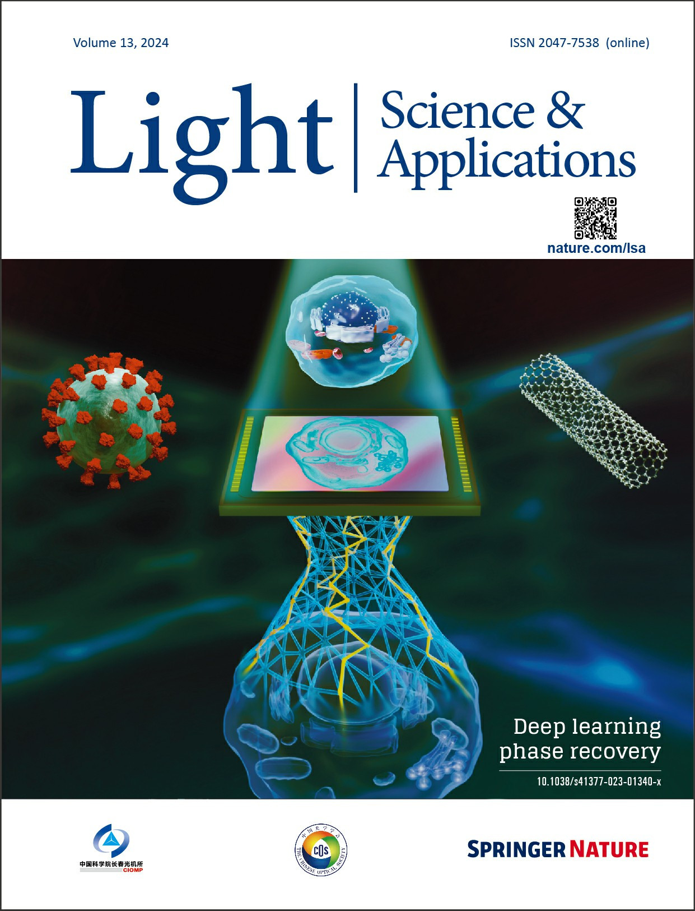

Biography
Kaiqiang Wang (王凯强) is now a postdoctoral fellow in the Lab of Prof. Edmund Y. Lam at the University of Hong Kong.
Before that, he did postdoctoral research in the Lab of Prof. Renjie Zhou at the Chinese University of Hong Kong.
He received his PhD at Northwestern Polytechnical University under the supervision of Prof. Jianlin Zhao, Prof. Jianglei Di, and Prof. Kemao Qian.
He is an enthusiast for computational imaging and deep learning.
Email | Github | Google Scholar | ResearchGate | ZhiHu(知乎)
News
Publications
Academic Journals:
- On the use of deep learning for phase recovery
K. Wang, L. Song, C. Wang, Z. Ren, G. Zhao, J. Dou, J. Di, G. Barbastathis, R. Zhou, J. Zhao, E. Lam
Light: Science & Applications 2024 | paper | code | cover paper and 2024 editors' highlight
News: Phys.org | Eurekalert! | Azooptics | 中国光学 | LSA | CSOE
Abstract: Phase recovery (PR) refers to calculating the phase of the light field from its intensity measurements. As exemplified from quantitative phase imaging and coherent diffraction imaging to adaptive optics, PR is essential for reconstructing the refractive index distribution or topography of an object and correcting the aberration of an imaging system. In recent years, deep learning (DL), often implemented through deep neural networks, has provided unprecedented support for computational imaging, leading to more efficient solutions for various PR problems. In this review, we first briefly introduce conventional methods for PR. Then, we review how DL provides support for PR from the following three stages, namely, pre-processing, in-processing, and post-processing. We also review how DL is used in phase image processing. Finally, we summarize the work in DL for PR and provide an outlook on how to better use DL to improve the reliability and efficiency of PR. Furthermore, we present a live-updating resource (https://github.com/kqwang/phase-recovery) for readers to learn more about PR.
 - Real-time phase measurement of optical vortex via digital holography
H. Qiu, X. Liu, K. Wang, J. Dou, J. Di, and Y. Qin
Frontiers in Physics 2023 | paper - Deep learning spatial phase unwrapping: a comparative review
K. Wang, Q. Kemao, J. Di, and J. Zhao
Advanced Photonics Nexus 2022 | paper | code | video | first article of this journal
Abstract: Phase unwrapping is an indispensable step for many optical imaging and metrology techniques. The rapid development of deep learning has brought ideas to phase unwrapping. In the past four years, various phase dataset generation methods and deep-learning-involved spatial phase unwrapping methods have emerged quickly. However, these methods were proposed and analyzed individually, using different strategies, neural networks, and datasets, and applied to different scenarios. It is thus necessary to do a detailed comparison of these deep-learning-involved methods and the traditional methods in the same context. We first divide the phase dataset generation methods into random matrix enlargement, Gauss matrix superposition, and Zernike polynomials superposition, and then divide the deep-learning-involved phase unwrapping methods into deep-learning-performed regression, deep-learning-performed wrap count, and deep-learning-assisted denoising. For the phase dataset generation methods, the richness of the datasets and the generalization capabilities of the trained networks are compared in detail. In addition, the deep-learning-involved methods are analyzed and compared with the traditional methods in ideal, noisy, discontinuous, and aliasing cases. Finally, we give suggestions on the best methods for different situations and propose the potential development direction for the dataset generation method, neural network structure, generalization ability enhancement, and neural network training strategy for the deep-learning-involved spatial phase unwrapping methods. - Light-field focusing and modulation through scattering media based on dual-polarization-encoded digital optical phase conjugation
J. Dou, C. Ma, K. Wang, J. Di, J. Zhang, and J. Zhao
Optics Letters 2022 | paper - Deep learning wavefront sensing and aberration correction in atmospheric turbulence
K. Wang, M. Zhang, J. Tang, L. Wang, L. Hu, X. Wu, W. Li, J. Di, G. Liu, and J. Zhao
PhotoniX 2021 | paper
Abstract: Deep learning neural networks are used for wavefront sensing and aberration correction in atmospheric turbulence without any wavefront sensor (i.e. reconstruction of the wavefront aberration phase from the distorted image of the object). We compared and found the characteristics of the direct and indirect reconstruction ways:(i) directly reconstructing the aberration phase; (ii) reconstructing the Zernike coefficients and then calculating the aberration phase. We verified the generalization ability and performance of the network for a single object and multiple objects. What's more, we verified the correction effect for a turbulence pool and the feasibility for a real atmospheric turbulence environment. - RestoreNet-Plus: Image restoration via deep learning in optical synthetic aperture imaging system
J. Tang, J. Wu, K. Wang, Z. Ren, X. Wu, L. Hu, J. Di, G. Liu, and J. Zhao
Optics and Lasers in Engineering 2021 | paper - RestoreNet: a deep learning framework for image restoration in optical synthetic aperture imaging system
J. Tang, K. Wang, Z. Ren, W. Zhang, X. Wu, J. Di, G. Liu, and J. Zhao
Optics and Lasers in Engineering 2021 | paper - Research Progress in the Applications of Convolutional Neural Networks in Optical Information Processing
J. Di, J. Tang, J. Wu, K. Wang, Z. Ren, M. Zhang, and J. Zhao
Laser & Optoelectronics Progress 2021 | paper - Quantitative phase imaging using deep learning-based holographic microscope
J. Di, J. Wu, K. Wang, J. Tang, Y. Li, and J. Zhao
Frontiers in Physics 2021 | paper - Sparse-view imaging of a fiber internal structure in holographic diffraction tomography via a convolutional neural network
J. Di, W. Han, S. Liu, K. Wang, J. Tang, and J. Zhao
Applied Optics 2021 | paper - Transport of intensity equation from a single intensity image via deep learning
K. Wang, Jianglei Di, Ying Li, Zhenbo Ren, Qian Kemao, Jianlin Zhao
Optics and Lasers in Engineering 2020 | paper
Abstract: The transport of intensity equation (TIE) is an ideal candidate for phase imaging with partially coherent illuminations. TIE has the advantages of simplicity in phase calculation due to its closed-form solution and no requirement for a reference beam and phase unwrapping due to its non-interferometric nature. However, TIE requires multiple through-focus intensity images, and is very sensitive to image boundaries and noise. Thus, in this paper, we combine deep learning with TIE, abbreviated as dTIE. After being trained by TIE phase results, the dTIE retains the advantages of TIE, and overcomes the shortcomings of TIE as follows: (i) only one de-focus intensity image is required for phase imaging while the result is very close to the TIE result with SSIM index reaches 0.95, enabling more efficient phase imaging; (ii) the boundary problem automatically disappears due to the translation invariance of the convolutional networks; (iii) it is insensitive to noise even with very heavy noise. All these enhancements are verified in the application of dTIE for phase imaging of real cells. - Y4-Net: a deep learning solution to one-shot dual-wavelength digital holographic reconstruction
K. Wang, Q. Kemao, J. Di, and J. Zhao
Optics Letters 2020 | paper
Abstract: In this Letter, a deep learning solution (Y4-Net, four output channels network) to one-shot dual-wavelength digital holography is proposed to simultaneously reconstruct the complex amplitude information of both wavelengths from a single digital hologram with high efficiency. In the meantime, by using single-wavelength results as network ground truth to train the Y4-Net, the challenging spectral overlapping problem in common-path situations is solved with high accuracy. - A deep learning-based image restoration method in optical synthetic aperture imaging system
J. Tang, K. Wang, W. Zhang, X. Wu, G. Liu, J. Di, and J. Zhao
Acta Optica Sinica 2020 | paper - Classification of cell morphology with quantitative phase microscopy and machine learning
Y. Li, J. Di, K. Wang, S. Wang, and J. Zhao
Optics Express 2020 | paper - Y-Net: a one-to-two deep learning framework for digital holographic reconstruction
K. Wang, J. Dou, Q. Kemao, J. Di, and J. Zhao
Optics Letters 2019 | paper | editors' pick
Abstract: In this Letter, for the first time, to the best of our knowledge, we propose a digital holographic reconstruction method with a one-to-two deep learning framework (Y-Net). Perfectly fitting the holographic reconstruction process, the Y-Net can simultaneously reconstruct intensity and phase information from a single digital hologram. As a result, this compact network with reduced parameters brings higher performance than typical network variants. The experimental results of the mouse phagocytes demonstrate the advantages of the proposed Y-Net. - One-step robust deep learning phase unwrapping
K. Wang, Y. Li, Q. Kemao, J. Di, and J. Zhao
Optics express 2019 | paper | code | ESI highly cited paper
Abstract: Phase unwrapping is an important but challenging issue in phase measurement. Even with the research efforts of a few decades, unfortunately, the problem remains not well solved, especially when heavy noise and aliasing (undersampling) are present. We propose a database generation method for phase-type objects and a one-step deep learning phase unwrapping method. With a trained deep neural network, the unseen phase fields of living mouse osteoblasts and dynamic candle flame are successfully unwrapped, demonstrating that the complicated nonlinear phase unwrapping task can be directly fulfilled in one step by a single deep neural network. Excellent anti-noise and anti-aliasing performances outperforming classical methods are highlighted in this paper. - Quantitative phase microscopy for cellular dynamics based on transport of intensity equation
Y. Li, J. Di, C. Ma, J. Zhang, J. Zhong, K. Wang, T. Xi, and J. Zhao
Optics Express 2018 | paper - Quasicommon-path digital holographic microscopy with phase aberration compensation based on a long-working distance objective
J. Di, K. Wang, J. Zhang, C. Ma, T. Xi, Y. Li, K. Wei, W. Qu, and J. Zhao
Optical Engineering 2018 | paper - Quantitative and dynamic phase imaging of biological cells by the use of the digital holographic microscopy based on a beam displacer unit
J. Di, Y. Li, K. Wang, and J. Zhao
IEEE Photonics Journal 2018 | paper - Dual-wavelength common-path digital holographic microscopy for quantitative phase imaging of biological cells
J. Di, Y. Song, T. Xi, J. Zhang, Y. Li, C. Ma, K. Wang, and J. Zhao
Optical Engineering 2017 | paper
Conference Proceedings:
- RestoreNet: a deep learning framework for image restoration in optical multi-aperture imaging system
J. Tang, K. Wang, X. Wu, J. Di, G. Liu, and J. Zhao
in Optics Frontier Online 2020: Optics Imaging and Display (SPIE, 2020), 11571, pp. 19–25. | paper - Deep learning in computational imaging
J. Di, K. Wang, and J. Zhao
in Holography, Diffractive Optics, and Applications X (SPIE, 2020), 11551, p. 1155107. | paper - Deep learning-based holographic reconstruction in digital holography
J. Di, K. Wang, Y. Li, and J. Zhao
in Digital Holography and Three-Dimensional Imaging (Optica Publishing Group, 2020), pp. HTu4B-2. | paper - Common-path digital holographic microscopy based on a beam displacer unit
J. Di, J. Zhang, Y. Song, K. Wang, K. Wei, and J. Zhao
in Quantitative Phase Imaging IV (SPIE, 2018), 10503, pp. 208–211. | paper - Improvement of phase measurement accuracy and stability in dual-wavelength common-path digital holographic microscopy
J. Di, Y. Song, T. Xi, J. Zhang, Y. Li, C. Ma, K. Wang, and J. Zhao
in Fifth International Conference on Optical and Photonics Engineering (SPIE, 2017), 10449, pp. 349–354. | paper
Services
Journal Reviewer:
Nature: Light: Science & Applications.IEEE: IEEE Transactions on Image Processing, IEEE Photonics Technology Letters, IEEE Photonics Journal.
Optica: Biomedical Optics Express, Optics Express, Applied Optics, Journal of the Optical Society of America A, Optics Continuum.
Elsevier: Optics and Lasers in Engineering, Optics Communications.
Educations
PhD, Optical Engineering
BSc, Applied Physics
Awards